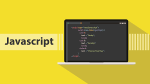

Started in 2010,AkiraChix is a non profitable organisation that equips girls with not
only tech skills but also life skills.
The programme is known as codeHive and currently led by Samantha Wamani,
while the co-founders are Linda Kamau and Marie Githinji.
The selected girls get the opportunity to join the one year programme
and get a full team of proffesional trainers of different courses they
will be learning.

Backend Development
Python is known to be a programming language
used all over the world by backend developers
Here in AkiraChix we study python as one of our
languages..Python is fun you should try it out

Frontend-web Development
JavaScript is a frontend programming language used by
frontend web developers .Js is known to be used alongside
html and css on a web page. Js is also a lightweight ,
interprated object oriented language.

Frontend Mobile Development
Kotlin is a programming language used by android app developers.
Kotlin is written on an IDE known as intelliJ IDEA , Kotlin is known to
be a more concise and safer way to write code which is less prone
to errors.

Internet Of Things
IoT is a course taught here at AkiraChix where by the girls
are taught about how to connect things using the arduino and also
learn how to code .With IoT being the inter connection of devices
to the internet to later on give you data or do a particular outcome.

Industrial desing
Industrial design is a course that also enables the girls not only
to desing products but to also come up with ways on approaching the
particular problem and coming up with an effective solution to the
problem.
Ux Research
Ux Research in combination with Ux design is that they are both
human centered ways of solving solutions they are manly focused
on how to help and improve the products already in the market for
their user.

Navigating Your Journey
Famously known as NYJ in shortform .NYJ is part of the programme
to help our girls not only to get skills that they will use in the
office but to also gain self awareness about
themselves and just
basically to understand who they are and what they need.
Professional Development
To Professional development even by the name it is there to help the
girls to learn how to cope in the office or wherever they will, be
posted at work.PD is there to prepare the girls phsycollogically on how
the field work operates.
Startup 101
Last but not least Startup101 is there to train the girls on how to
go about when they have an idea of a business they would like to star
this is whwre startup comes in handy since they would have acquired skills
on how to go about on their idea with alot of ease.
"You can't afford to give up in life!,they are all watching you".
AkiraChix
"She Builds!" "She Serves!" "She Leads!"